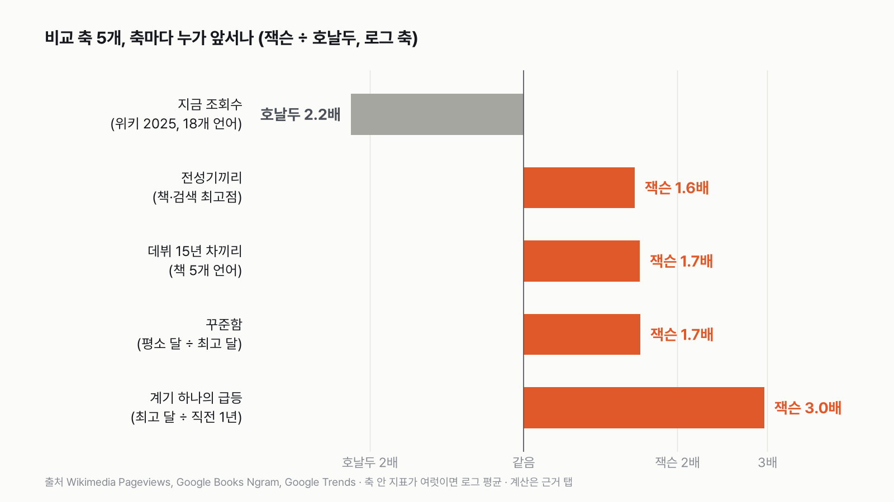
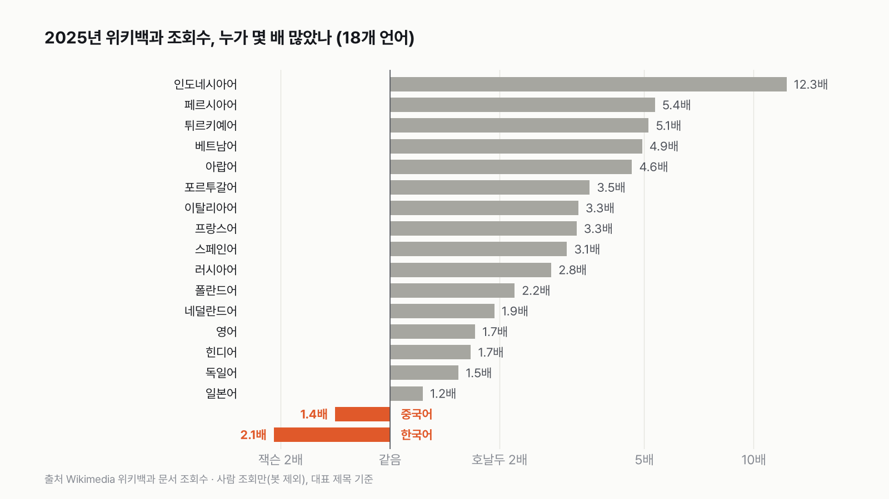
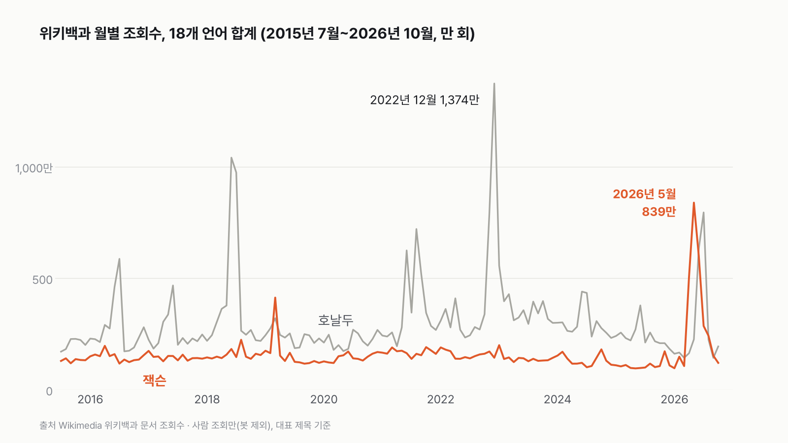
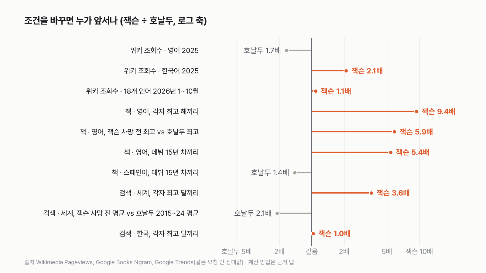
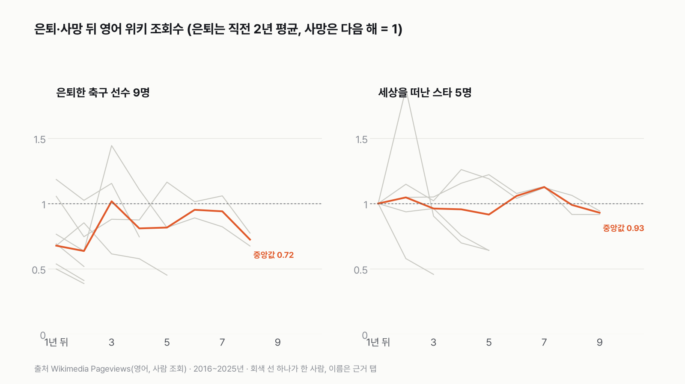

잭슨 vs 호날두, 지금은 호날두지만 전성기끼리 붙이면 잭슨
'누가 더 유명한가'는 언제를, 무엇으로 재느냐에 따라 답이 갈려요. 같은 잣대로 전성기끼리 맞추면 잭슨 쪽이에요.

- 지금 위키백과 조회수로는 호날두가 2.2배예요(2025년, 18개 언어 합계). 다만 이 숫자는 2015년부터 있어서, 세상을 떠난 지 6~16년 된 잭슨과 전성기 호날두를 붙인 비교예요.
- 전성기끼리, 데뷔 15년 차끼리, 꾸준함, 계기 하나의 급등까지 축 5개로 나눠 보면 4개에서 잭슨이 앞서요. 다섯 축에 같은 무게를 주면 잭슨이 1.45배예요.
- '지금 조회수' 축에 46% 넘는 무게를 주면 호날두로 뒤집혀요. 이 가정이면 영어 위키백과에서 잭슨이 다시 앞설 확률은 2030년에 처음 절반을 넘어요.
처음 글은 위키백과 조회수만 봤어요. 그런데 두 사람은 같은 시대 사람이 아니에요. 잭슨은 1969년 잭슨 파이브로 데뷔해 2009년 6월 세상을 떠났고, 호날두는 2002년 프로에 데뷔해 지금도 뛰어요. 위키백과 문서별 조회수는 2015년 7월부터만 있으니, 이 잣대로는 세상을 떠난 지 6~16년 된 잭슨과 한창때 호날두를 붙이게 돼요. 호날두에게 유리한 판이에요. 그래서 시대를 넘어 같은 잣대로 잴 수 있는 자료를 더 찾았어요. 책은 1958년부터, 검색은 2004년부터 있어요.

축 1. 지금 조회수 — 호날두 2.2배
2025년 18개 언어 위키백과를 합치면 호날두 문서는 2,890만 번, 잭슨 문서는 1,327만 번 열렸어요. 호날두가 2.2배예요. 언어별로는 18곳 중 16곳에서 호날두가 많았어요. 영어로는 1,212만 대 707만, 인도네시아어는 12.3배였어요.


이 축 안에서도 뒤집힌 곳이 있었어요. 한국어에서는 잭슨 문서가 7만 100번, 호날두 문서가 3만 3,573번 열려서 잭슨이 2.1배예요. 중국어도 잭슨이 1.4배였어요. 세상을 떠난 지 16년 된 가수가 현역 축구 선수를 두 언어에서 앞선 거예요.
올해는 더 크게 뒤집혔어요. 잭슨 일대기 영화 「마이클」이 4월 24일 북미에서 개봉한 뒤, 18개 언어 합계로 5월 잭슨 문서 조회수가 839만이 됐어요. 2025년 월평균(111만)의 7.6배예요. 1~10월을 모두 더하면 잭슨 3,103만, 호날두 2,853만으로 잭슨이 많아요. 영화 한 편이 한 해 판정을 바꾼 거예요. 그래서 '지금' 축은 2026년 대신 영화가 없던 2025년으로 판정했어요.


축 2. 전성기끼리 — 책은 잭슨, 검색은 호날두, 합치면 잭슨 1.6배
책부터 봤어요. 영어 책 속 언급 빈도는 잭슨이 세상을 떠난 2009년에 100만 개당 0.637로 가장 높았어요. 호날두는 자료 마지막 해인 2022년 0.0674가 가장 높았어요. 9.4배예요. 사망이 만든 급등은 전성기라 부르기 어려우니 2008년까지로 자르면, 잭슨의 가장 높은 해는 2005년 0.395예요. 그래도 5.9배예요. 프랑스어·독일어 책도 잭슨이 3~8배 앞섰어요. 스페인어 책은 1.8배로 좁았고, 이탈리아어 책은 2008년까지로 자르면 호날두가 1.05배로 거의 같아요.
검색은 반대였어요. 2004년부터 구글 검색 관심도를 두 사람 함께 받으면, 가장 높은 달은 잭슨이 세상을 떠난 다음 달인 2009년 7월이에요(100). 호날두의 가장 높은 달 2022년 12월은 28이에요. 이 둘을 그대로 붙이면 잭슨이 3.6배지만, 역시 사망이 만든 달이에요. 그 전만 보면 잭슨의 가장 높은 달은 13이라 호날두(28)가 2.2배예요. 검색이 생긴 2004년엔 잭슨의 전성기가 이미 지나 있었다는 뜻이기도 해요.
한국만 따로 받은 검색에서는 둘이 거의 같았어요. 잭슨의 가장 높은 달(2009년 7월)이 100, 호날두의 가장 높은 달(2022년 12월)이 97이에요. 이 축은 책(잭슨 5.9배)과 검색(호날두 2.2배)을 로그 평균으로 합쳐 잭슨 1.6배로 판정했어요.


축 3. 데뷔 15년 차끼리 — 잭슨 1.7배, 언어에 따라 뒤집혀요
최고점 말고, 같은 연차에 얼마나 이야기됐는지도 맞춰 봤어요. 영어 책에서 잭슨 5년 차(1984년, 「Thriller」가 나온 다음 해)는 0.292, 호날두 5년 차(2008년)는 0.014예요. 21배예요. 15년 차(잭슨 1994년, 호날두 2018년)에도 5.4배로, 영어 책에서는 5·10·15·19년 차 모두 잭슨이 4~21배 앞섰어요.

다른 언어에서는 뒤집혔어요. 15년 차끼리 스페인어 책은 호날두가 1.4배, 이탈리아어 책은 1.6배 앞서요. 프랑스어(2.2배)·독일어(2.7배)는 잭슨이에요. 다섯 언어를 로그 평균으로 합치면 잭슨 1.7배예요. 데뷔 해를 바꿔도 봤어요. 잭슨을 잭슨 파이브(1969년), 호날두를 스포르팅(2002년)으로 잡으면 15년 차는 잭슨 1984년 대 호날두 2017년이 되고, 영어 책에서 잭슨이 6.8배로 더 벌어져요. 이 경우엔 독일어 책이 호날두(1.1배)로 뒤집혀요.
축 4. 꾸준함 — 잭슨 1.7배
영어 위키백과에서 2015년 7월~2025년 12월 잭슨 문서의 평소 달(중앙값)은 67만 7,410번, 가장 많았던 달은 245만 8,886번이에요. 평소가 최고의 0.28이에요. 호날두는 평소 102만 3,863번, 최고 628만 5,456번(2022년 12월)으로 0.16이에요. 호날두는 월드컵과 이적 때 크게 튀고 평소엔 그보다 훨씬 낮아요. 잭슨은 세상을 떠난 뒤에도 해마다 비슷한 수준으로 찾아져요. 2016년 837만에서 2025년 707만으로, 9년 동안 한 해 평균 1.9%씩 줄었어요.
축 5. 계기 하나의 급등 — 잭슨 3.0배
계기 하나가 관심을 얼마나 끌어올렸는지도 쟀어요. 검색 관심도로 잭슨의 2009년 7월은 직전 12개월 평균(10.2)의 9.8배였어요. 호날두의 2022년 12월(카타르 월드컵이 열리고 새 팀으로 옮긴 달)은 직전 12개월 평균(8.4)의 3.3배예요. 잭슨이 3.0배 컸어요. 올해 영화 「마이클」 개봉 뒤 위키백과 조회수가 7.6배로 뛴 것도 같은 방향이에요.
종합 — 같은 무게면 잭슨 1.45배, '지금'에 46% 넘게 주면 호날두
다섯 축을 같은 무게로 합치면 잭슨이 1.45배 앞서요. 축 다섯 개 중 네 개가 잭슨이에요. 그런데 '지금 조회수'를 얼마나 중요하게 보느냐에 따라 달라져요. 나머지 네 축은 같은 무게로 두고 '지금' 축의 무게만 올려 보면, 46%를 넘는 순간 호날두가 앞서요. '요즘 사람들이 누구를 더 찾아보나'에 절반 가까운 무게를 두면 호날두, 그보다 덜 두면 잭슨이에요.

예상 — 이 가정이면 2030년부터 잭슨이 앞설 가능성이 더 커요
앞으로는 어떨까요. 호날두는 언젠가 은퇴해요. 은퇴한 축구 선수의 조회수가 어떻게 되는지 보려고, 2017~2024년에 은퇴한 선수 9명(카카, 피를로, 카시야스, 루니, 베일, 즐라탄, 부폰, 크로스, 이니에스타)의 영어 위키백과 조회수를 같은 조건으로 받았어요. 은퇴 직전 2년 평균을 1로 놓으면, 은퇴 1년 뒤 중앙값이 0.68이에요. 그 뒤로는 0.6~1.0 사이를 오가요.
세상을 떠난 스타 5명(보위, 프린스, 코비 브라이언트, 마라도나, 펠레)은 달랐어요. 떠난 다음 해를 1로 놓으면 그 뒤에도 0.9~1.1에 머무는 경우가 많았어요. 보위와 프린스는 9년 뒤에도 0.92~0.94예요. 세상을 떠난 스타의 관심이 오래 유지되는 모양은 잭슨만의 일이 아니었어요.


이걸로 영어 위키백과 연간 조회수를 2040년까지 내다봤어요. 호날두는 2027~2030년 중 한 해에 은퇴하고, 그 전엔 한 해에 0~20%씩 줄고(2023~2025년 추세가 -20%), 은퇴 뒤엔 9명 중 한 명의 곡선을 따른다고 가정했어요. 잭슨은 한 해에 0~1.9%씩 준다고 봤어요. 2만 번 돌렸더니, 잭슨이 앞설 확률이 2028년 19%, 2029년 40%, 2030년 54%로 처음 절반을 넘고, 2032년 이후엔 68~70%에서 머물러요. 나머지 30% 정도는 은퇴 뒤에도 조회수가 잘 유지되는 경우라, 호날두가 계속 앞서요.

정리하면, 이 조건들이면 지금은 호날두, 전성기끼리는 잭슨, 그리고 몇 년 뒤엔 다시 잭슨이 앞설 가능성이 더 커요. 다만 올해처럼 영화 한 편이나 월드컵 한 번이 한 해 숫자를 바꿀 수 있어서, 해마다 판정은 흔들릴 수 있어요.
이 숫자는 어디서 왔나요
출처
기준일 위키백과 2015년 7월~2026년 10월, 책 1958~2022년, 검색 2004년 1월~2026년 11월(11월은 덜 찬 달). 모두 2026년 11월 6일에 받았어요.
Wikimedia FoundationPageviews
- 위키백과 문서별 월간 조회수 (Wikimedia Pageviews API)원본 보기
18개 언어, 두 사람 문서의 월별 조회수 2015-07~2026-10, 은퇴 선수 9명·세상을 떠난 스타 5명(영어)
Wikimedia FoundationWikidata
- 언어별 문서 제목Wikidata Q2831원본 보기
언어마다 어느 문서를 셀지 정하는 데 씀
GoogleBooks Ngram Viewer
- 책 속 언급 빈도 (Google Books Ngram)원본 보기
영어·프랑스어·독일어·스페인어·이탈리아어 책, 1958~2022년
GoogleTrends
- 검색 관심도 (Google Trends)원본 보기
2004년 1월~2026년 11월 월별, 세계·한국
어떻게 셌나요
- 비교 조건은 데이터를 다시 받기 전에 정했어요. 두 사람의 활동 시기가 다르니, 같은 해를 비교하는 '지금' 축 하나만으로 판정하지 않기로 했어요. 그래서 축을 다섯 개로 나눴어요.
- 지금: 2025년 위키백과 조회수(18개 언어 합계)
- 전성기끼리: 각자 가장 높았던 해·달끼리. 잭슨은 사망이 만든 급등을 빼고 2008년(책)·2009년 5월(검색)까지의 최고점
- 데뷔 15년 차끼리: 책 속 언급 빈도를 데뷔 뒤 같은 해끼리. 잭슨 1979년(「Off the Wall」), 호날두 2003년(맨체스터 유나이티드) = 0년 차
- 꾸준함: 영어 위키백과의 평소 달(중앙값)을 가장 많았던 달로 나눈 값. 높을수록 덜 들쭉날쭉해요
- 계기 하나의 급등: 검색 관심도가 가장 높았던 달을 그 직전 12개월 평균으로 나눈 값
- 축 하나에 지표가 여럿이면 '잭슨 ÷ 호날두'를 로그 평균(곱해서 제곱근을 내는 평균)으로 합쳤어요. 두 배 앞선 것과 두 배 뒤진 것이 같은 크기로 상쇄돼요.
- 위키백과 조회수는 사람이 문서를 연 횟수예요. Wikimedia가 봇으로 분류한 조회는 빠지고, 대표 문서 하나만 세요.
- 책 속 언급 빈도(Google Books Ngram)는 그해 나온 책 속 두 단어 묶음 가운데 그 이름이 차지하는 비율이에요. 100만 개당 몇 번인지로 적었어요.
- 검색 관심도(Google Trends)는 실제 검색 횟수가 아니에요. 같은 요청 안에서 가장 높은 달을 100으로 맞춘 상대값이라, 두 사람을 한 번에 넣어 받은 값끼리만 비교했어요.
한계 8가지
이 데이터로 말할 수 없는 것
- 모두 '찾아본 횟수'나 '언급된 비율'이에요. 인기·실력·음반 판매·경기 기록과는 다른 숫자예요.
- 위키백과는 2015년 7월부터, 검색은 2004년부터라 잭슨의 1980년대 전성기는 책으로만 볼 수 있어요. 책은 사건보다 1~3년 늦게 반영되고 2022년에서 끝나서, 호날두의 최근 몇 년은 덜 들어가요.
- 책 속 'Michael Jackson'에는 같은 이름의 다른 사람도 섞여 있어요. 'Ronaldo'나 'CR7'만 쓴 경우는 'Cristiano Ronaldo'로 세지 않았어요. 한국어·일본어 책 자료는 없어요.
- 검색 관심도는 상대값이라 다른 요청끼리, 다른 나라끼리 크기를 바로 비교할 수 없어요.
- 책 자료와 검색 자료는 구글이 화면에 보여 주는 값을, 그 화면이 쓰는 주소로 받았어요. 따로 문서로 공개된 다운로드 API는 아니에요.
- 축을 다섯 개로 나눈 것과 각 축의 지표는 제가 정한 거예요. 다른 축을 넣으면 종합 판정이 달라질 수 있어서, 무게에 따라 뒤집히는 지점을 같이 적었어요.
- 예상은 가정에 기대요. 은퇴 해, 은퇴 전 추세, 은퇴 뒤 곡선(9명뿐)이 바뀌면 숫자도 바뀌어요. 2026년의 영화 효과는 넣지 않았어요.
- 조회수가 왜 늘거나 줄었는지는 이 숫자로 알 수 없어요. 영화 개봉이나 월드컵은 같은 때 있었던 일이에요.
계산 기록
쓰기 전에 정한 것
- '조회수·언급 빈도·검색 관심도'라고만 부르고 인기나 실력으로 읽지 않기로 처음부터 정했어요.
- 첫 글은 위키백과 조회수 하나만으로 썼어요. "활동 시기가 다르다"는 지적을 받아 같은 날 비교 축 다섯 개로 다시 썼고, 그래서 여기 적어 둬요.
- 잭슨의 '전성기'에서는 사망이 만든 급등을 빼기로, 데뷔 해는 1979년·2003년을 기본으로 하고 반대 조건(1969년·2002년)도 같이 보기로 미리 정했어요.
- 비교 기준(은퇴 선수 9명, 세상을 떠난 스타 5명)은 조회수를 받기 전에 골랐고, 결과를 보고 넣거나 빼지 않았어요.
- 사생활이나 논란은 다루지 않기로 했어요. 그래서 뾰족한 달 가운데 공개 기록(개봉일, 월드컵, 이적)으로 확인되는 것만 적었어요.
처음 던진 질문
마이클 잭슨과 크리스티아누 호날두, 누구를 더 많이 찾아보고 더 많이 이야기했을까요? 두 사람은 활동한 시기가 달라요. 그래서 최대한 같은 조건이 되게 비교 축을 다섯 개로 나누고, 축마다 누가 앞서는지 본 다음 합쳐 봤어요. 앞으로 어떻게 될지도 가정을 밝히고 내다봤어요.
수집·검증 기록
- 위키백과 API:
https://wikimedia.org/api/rest_v1/metrics/pageviews/per-article/{언어}.wikipedia/all-access/user/{제목}/monthly/2015070100/2026103100(키 없음, User-Agent 지정). 수집일 2026-11-06. 언어·사람별 136개월씩. 문서 제목은 Wikidata sitelinks(data/raw/wikimedia/pageviews/2026-11-06/meta.yaml). - 2025년 합계(잭슨/호날두): 18개 언어 13,271,749 / 28,896,174(0.459). en 7,070,159 / 12,115,529, ko 70,100 / 33,573, zh 504,054 / 355,649, id 59,630 / 734,406.
- 넘겨주기 조회(2025년): ko 잭슨 296·호날두 747, zh 21,155·20,542, ja 3,037·2,805. 더해도 순서 같음.
- 2026년 1~10월 18개 언어: 잭슨 31,026,436, 호날두 28,533,865. 2026-05 잭슨 8,392,877 = 2025년 월평균 1,105,979의 7.6배.
- Ngram:
https://books.google.com/ngrams/json?content=Michael+Jackson%2CCristiano+Ronaldo&year_start=1958&year_end=2022&corpus={en,fr,de,es,it}&smoothing=0&case_insensitive=false. 값 ×1e6. en 잭슨 2009 0.637, 2005 0.395, 1984 0.292, 1994 0.354 / 호날두 2022 0.0674, 2018 0.065, 2008 0.014. 15년 차 비율(1994 vs 2018): en 5.43, fr 2.23, de 2.65, es 0.695, it 0.613 → 로그 평균 1.69. 반대 조건(1969·2002, 1984 vs 2017): en 6.77, fr 7.12, de 0.88, es 1.40, it 4.01. 원자료 data/raw/ngram/2026-11-06/. - Trends: explore → widgetdata/multiline(구글 트렌드 화면이 쓰는 주소), 토픽 /m/09889g(잭슨)·/m/02xt6q(호날두, Wikidata P646로 확인), 2004-01~, 세계·KR. 세계: 잭슨 최고 2009-07 100, 2009년 5월까지 최고 13, 호날두 최고 2022-12 28. 직전 12개월 평균: 잭슨 10.17(2008-07~2009-06), 호날두 8.42(2021-12~2022-11). 9.84 / 3.33 = 2.96. 한국 토픽: 잭슨 100, 호날두 97. 원자료 data/raw/gtrends/2026-11-06/(요청 주소 _requests.json).
- 축 판정(잭슨÷호날두): 지금 0.459, 전성기끼리 √(5.858×0.464)=1.649, 15년 차 1.688, 꾸준함 0.2755/0.1629=1.691(en 위키 2015-07~2025-12 중앙값/최댓값: 잭슨 677,410/2,458,886, 호날두 1,023,863/6,285,456), 급등 2.957.
- 종합: log10 평균. '지금' 축 log −0.338, 나머지 넷 평균 log 0.286. 같은 무게(각 20%) 10^((−0.338+4×0.286)/5) = 1.45. 뒤집히는 '지금' 무게 = 0.286/(0.286+0.338) = 0.458.
- 비교 기준(영어 위키, 같은 API): 은퇴 해 카카·피를로 2017, 카시야스 2020, 루니 2021, 베일·즐라탄·부폰 2023, 크로스·이니에스타 2024(마지막 공식 경기·은퇴 발표 해). 기준 = 은퇴 직전 2년 평균(2015년은 반년이라 카카·피를로는 2016년만). 세상을 떠난 해: 보위·프린스 2016, 코비·마라도나 2020, 펠레 2022. 기준 = 다음 해. 은퇴 k년 뒤 중앙값: 1년 0.68, 2년 0.64, 3년 1.02, 4년 0.81, 5년 0.82, 8년 0.72.
- 예상(pipelines/odd_jr_axes.py, 2만 번, 씨앗 20261106): 호날두 2025년 12,115,529에서 출발, 은퇴 해 2027~2030 균등, 은퇴 전 연 변화율 −20.2%(2023→2025)~0% 균등, 은퇴 뒤 = 직전 2년 평균 × 9명 중 한 명의 곡선(곡선이 끝나면 마지막 값 유지). 잭슨 2025년 7,070,159에서 연 −1.85%(2016→2025)~0% 균등. 잭슨이 앞설 확률: 2028 0.188, 2029 0.400, 2030 0.537, 2031 0.653, 2032~2040 0.67~0.70. 2040년 중앙값 호날두 499만, 잭슨 615만.
- 영화 「마이클」 북미 개봉 2026-04-24(Screen Daily). 월드컵 기간 2018-06-14~07-15, 2022-11-20~12-18, 2026-06-11~07-19.
- 스크립트: pipelines/wikimedia_pageviews.py, wikimedia_pageviews_compare.py, ngram_trends_jackson_ronaldo.py, odd_jr_axes.py, chart_odd_jackson_ronaldo.py, chart_odd_jackson_ronaldo_peak.py, chart_odd_jackson_ronaldo_axes.py. 마트: data/mart/media/odd_jackson_ronaldo_.csv, odd_jr_.csv.
새 글 나오면 받아 보기
피드 리더 앱에 이 사이트 주소를 한 번 넣어 두면, 새 글이 올라올 때 앱에 떠요. 가입이나 메일 주소는 필요 없어요.
받는 법 보기
- 피드 리더 앱을 하나 골라요. 새 글을 모아 보여 주는 앱이에요. 예를 들면 Feedly나 Inoreader가 있어요. 둘 다 무료고 웹·휴대폰에서 써요.
- 앱에서 '구독 추가'(+)를 누르고 아래 주소를 붙여 넣어요.
- 끝이에요. 새 글이 올라오면 앱 목록에 떠요.
https://protofu.github.io/opendata-insight/feed.xmlFeedly를 쓴다면 여기를 눌러 바로 추가할 수도 있어요.